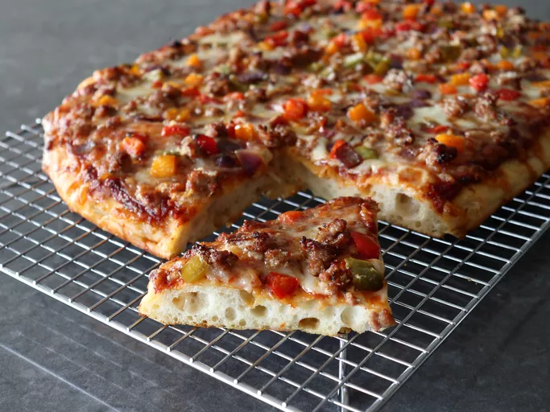

Home
Roman-Style Pizza

Description
Roman-style pizza, or pizza romana, is a thin, crispy pizza known for its
light, airy crust and rectangular shape.
Ingredients
-
Dough:
- 4 1/4 cups bread flour (500 grams)
- 1 rounded teaspoon dry yeast (3.5 grams)
- 1 1/2 cups plus 3 tablespoons water (400 ml)
-
Generous 1 1/2 tablespoons olive oil (20 ml), plus 2 teaspoons more
to oil container
- Rounded 1 1/2 teaspoons sea salt or kosher salt (10 grams)
-
Pizza:
- 6 ounces Italian sausage
- 1 cup diced sweet peppers and onions
- 1 1/2 cups prepared pizza sauce
- 2 cups shredded mozzarella cheese
- 1 1/2 cups shredded Monterey Jack cheese
- 1/2 cup freshly grated Parmigiano Reggiano cheese
- 1/4 cup olive oil, divided
Steps
-
Mix Dough: Combine flour, yeast, and water with a
wooden spoon until a rough dough forms.
-
Add Salt & Oil: Mix in salt and olive oil for 3 minutes
until smooth and sticky. Cover and rest for 15 minutes.
-
Stretch & Fold: Perform 3 sets of stretch-and-folds
every 15 minutes, turning the smooth side up after each set.
-
First Rise: Transfer to an oiled container, coat with
olive oil, cover, and refrigerate for 24 hours until doubled.
-
Shape Dough: Stretch into a 15-inch square, fold into a
rectangle, then thirds, and shape into a ball.
-
Second Rise: Transfer to an oiled container, coat with
oil, cover, and refrigerate for another 24 hours until doubled.
-
Bring to Room Temperature: Let dough sit on the counter
for 1 hour.
-
Prepare Toppings: Brown sausage in a skillet (10 min).
Sauté peppers and onions until softened (3-5 min).
-
Preheat Oven: Set to 500°F (250°C) and generously oil a
sheet pan (optional: use parchment paper).
-
Shape Crust: Transfer dough to the pan, stretch into a
rectangle, and brush with olive oil.
-
Prebake Crust: Bake until golden brown (15 min). Cool
on a rack for 15 min, then return to the pan.
-
Add Toppings: Spread sauce, scatter sausage and
vegetables, and top with mozzarella, Monterey Jack, and Parmesan.
-
Final Bake: Bake until edges are well browned (15 min).
Cool for 10-15 minutes before cutting and serving.